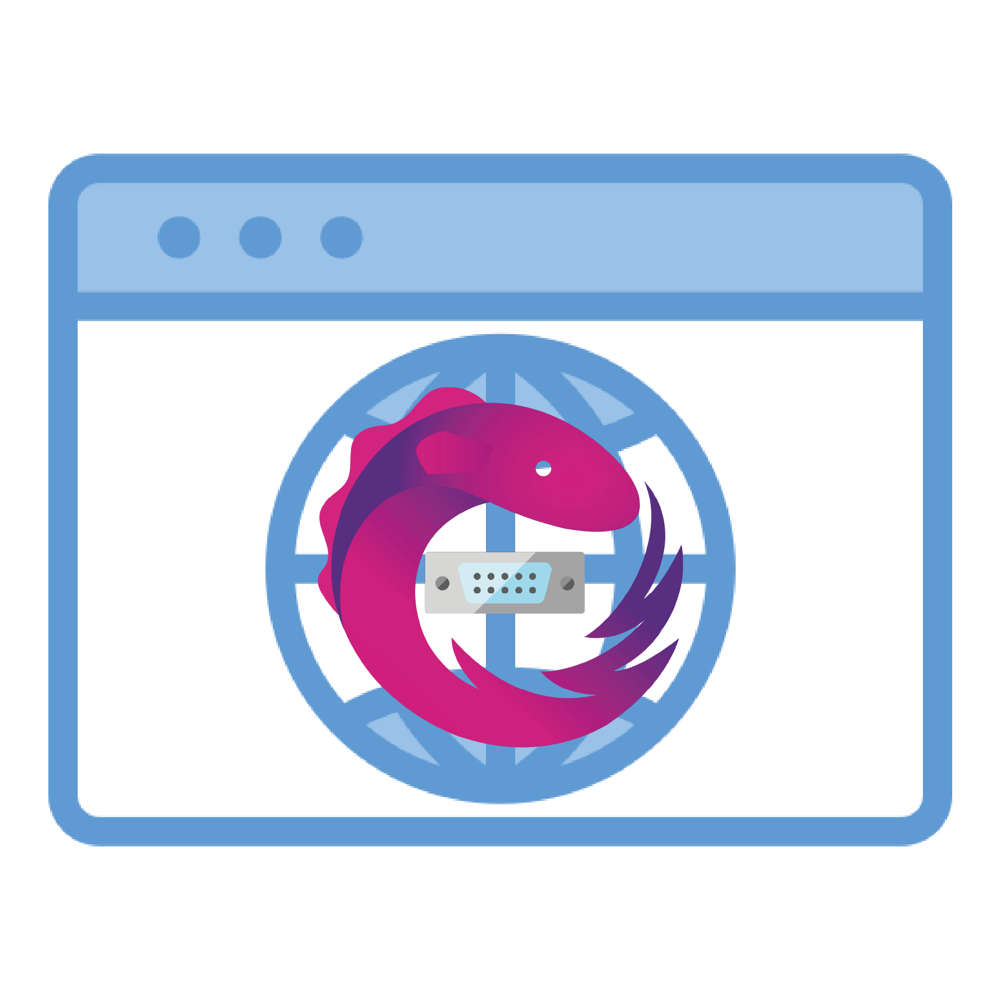

web-serial-rxjs API Documentation
web-serial-rxjs

A TypeScript library that provides a reactive RxJS-based wrapper for the Web Serial API, enabling easy serial port communication in web applications.
Table of Contents
Features
- RxJS-based reactive API: Leverage the power of RxJS Observables for reactive serial port communication
- TypeScript support: Full TypeScript type definitions included
- Browser detection: Built-in browser support detection and error handling
- Error handling: Comprehensive error handling with custom error classes and error codes
- Framework agnostic: Works with any JavaScript/TypeScript framework or vanilla JavaScript
Browser Support
The Web Serial API is currently only supported in Chromium-based browsers:
- Chrome 89+
- Edge 89+
- Opera 75+
The library includes built-in browser detection utilities to check for Web Serial API support before attempting to use it.
Installation
Install the package using npm or pnpm:
npm install @gurezo/web-serial-rxjs
# or
pnpm add @gurezo/web-serial-rxjs
Peer Dependencies
This library requires RxJS as a peer dependency:
npm install rxjs
# or
pnpm add rxjs
Minimum required version: RxJS ^7.8.0
Documentation
- Quick Start - Get started with basic examples and usage patterns
- API Reference - Complete API documentation with detailed descriptions
- Advanced Usage - Advanced patterns, stream processing, and error recovery
Framework Examples
This repository includes example applications demonstrating how to use web-serial-rxjs with different frameworks:
- Vanilla JavaScript - Basic usage with vanilla JavaScript
- Vanilla TypeScript - TypeScript example with RxJS
- React - React example with custom hook (
useSerialClient)
- Vue - Vue 3 example using Composition API
- Svelte - Svelte example using Svelte Store
- Angular - Angular example using a Service
Each example includes a README with setup and usage instructions.
Contributing
We welcome contributions! Please see our Contributing Guide for details on:
- Development setup
- Code style guidelines
- Commit message conventions
- Pull request process
For Japanese contributors, please see CONTRIBUTING.ja.md.
License
This project is licensed under the MIT License - see the LICENSE file for details.
Links